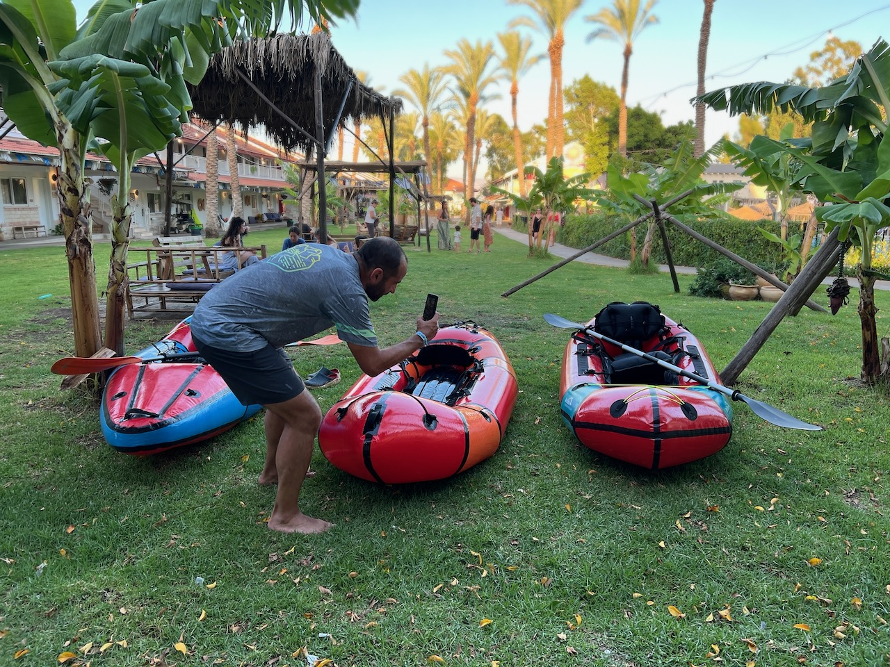
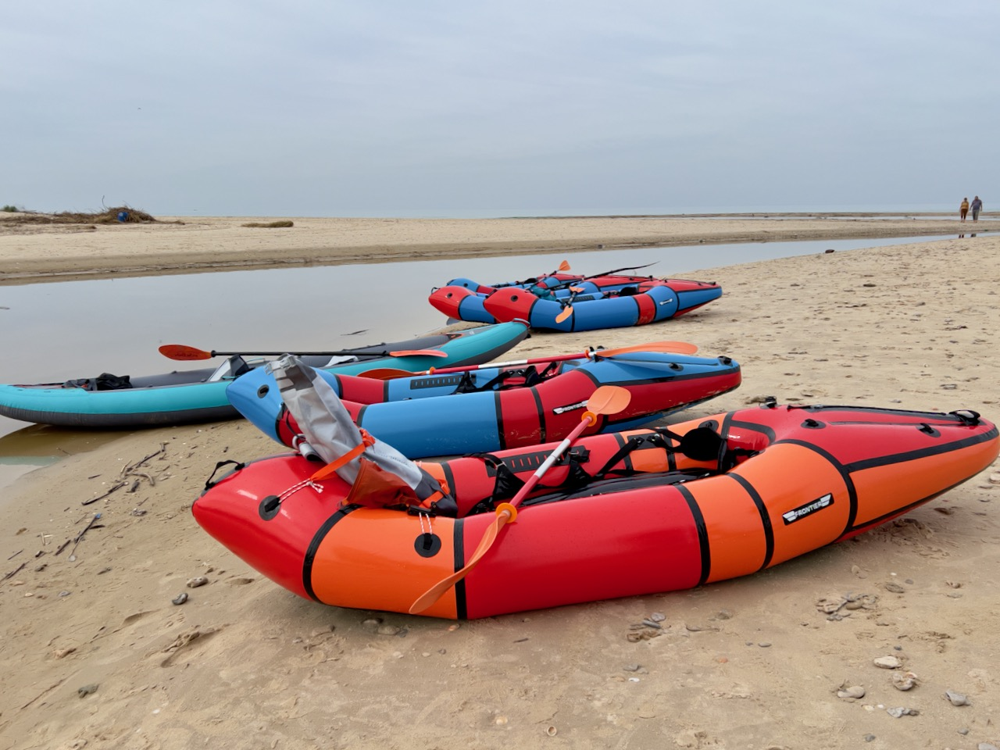
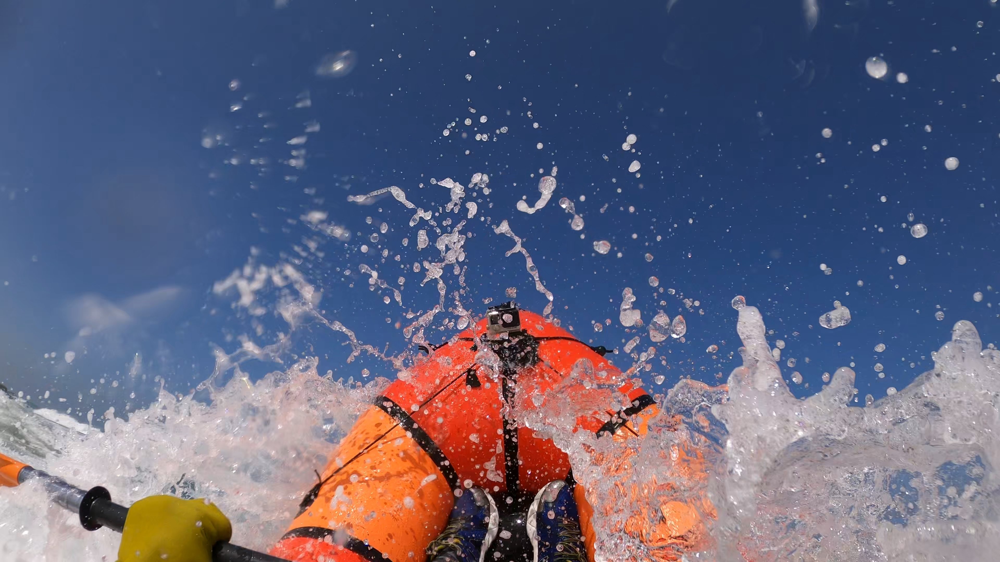
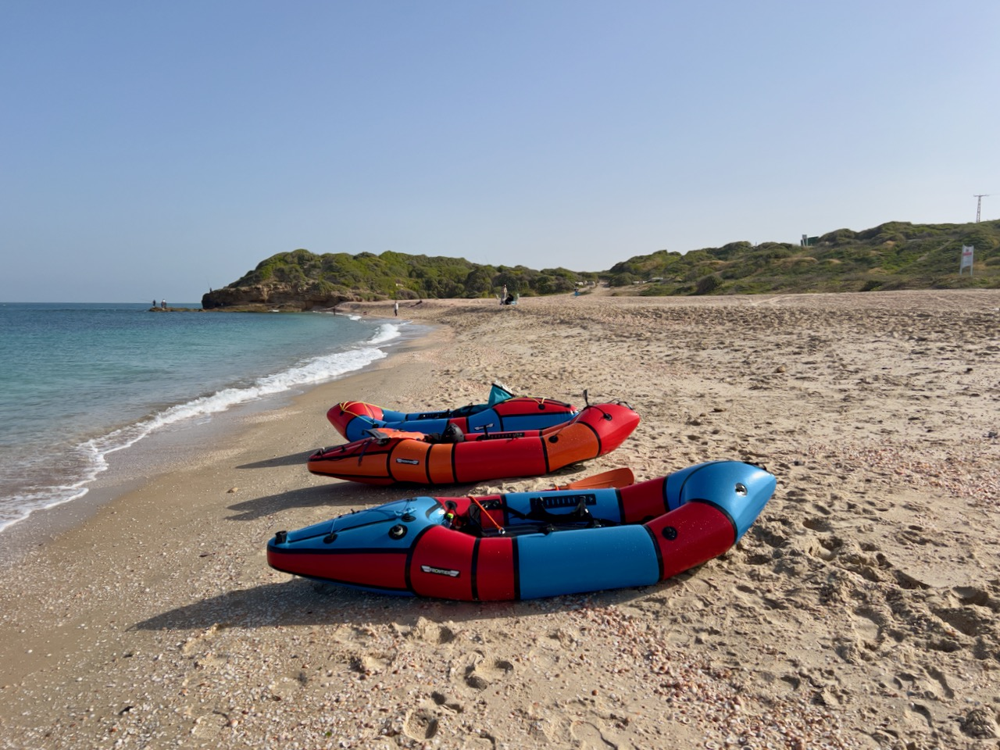

Experience the Magic of Nature
Packrafting is an amazing way to discover Israel’s nature from a whole new perspective...

Packrafting combines outdoor activity, exploration of nature, and water travel. Its core is a lightweight, compact, and versatile inflatable boat—a packraft—that fits easily in your backpack.


Israel is a fantastic place for packrafting. Its rivers, lakes, and coastlines offer a variety of landscapes:

The minimum kit for packrafting includes:

Packrafting is not just a sport—it’s a lifestyle. It’s a way to explore nature, escape the city, and challenge yourself. Try it and discover a new world of adventure!

Unique water adventures are waiting for you!

Packrafting is an amazing way to discover Israel’s nature from a whole new perspective...

We are a team of enthusiasts united by our love for nature, rivers, lakes, the sea, and, of course, the adrenaline of whitewater! packraft.co.il is a community for those ready to explore Israel’s watery landscapes together. We offer exciting adventures for anyone eager to challenge themselves and discover wild beauty with a new, exhilarating perspective.

It all started with a 120 km expedition along Karelia’s rivers and lakes on large rafts and kayaks. Later came a sea kayak course. And, as you might guess, we got our packrafts. We’ve navigated many rapids, explored hidden bays and scenic shores, and now we want to share this experience with you. packraft.co.il is the result of our dream to make packrafting accessible to everyone searching for real adventure.